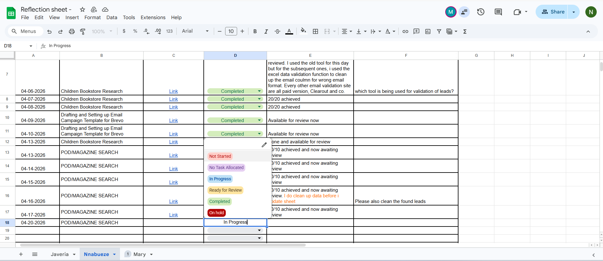
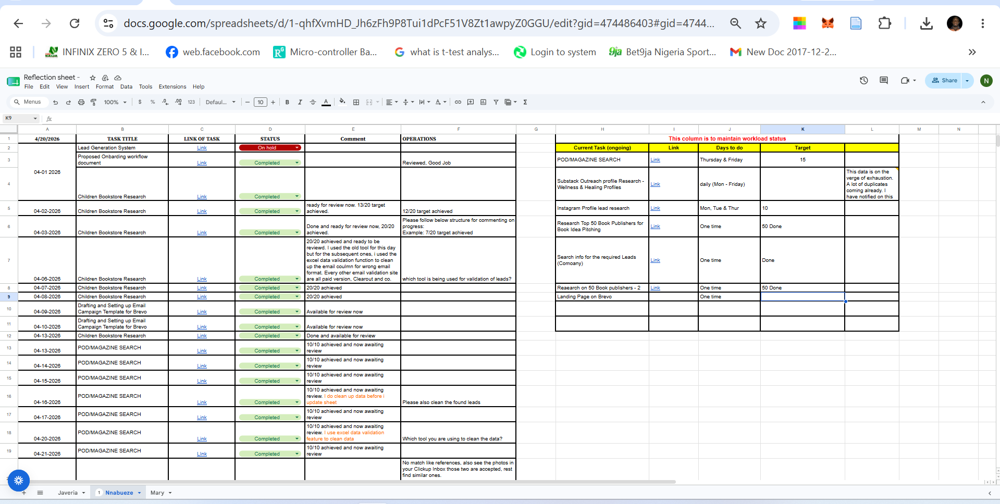
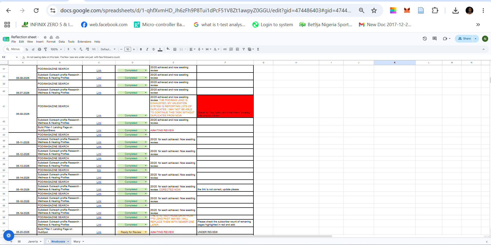

Operations Support • Documentation • Workflow Management
During my internship with PUEPR, I created and maintained a centralized Reflection Sheet that served as the primary operational reporting system for daily task management. Rather than reporting progress across multiple conversations or uploading updates to different workspaces, every assignment, progress update, review comment, and operational feedback was documented in one structured location. This system improved transparency, simplified communication between contributors and Operations Managers, and created a complete audit trail for ongoing projects.
Managing multiple projects across different departments required a structured method for tracking assignments, progress, reviews, and workload. Without a centralized reporting system, updates could easily become scattered across different conversations, making project monitoring inefficient.

To create consistency across multiple departments, I implemented a standardized task status workflow using Google Sheets dropdown validation. Every task progressed through clearly defined stages including Not Started, No Task Allocated, In Progress, Ready for Review, Completed, and On Hold. This provided Operations Managers with instant visibility into project progress while reducing unnecessary follow-up communication.

The Reflection Sheet functioned as the central operational reporting dashboard throughout the internship. It consolidated task titles, supporting links, status tracking, assignee comments, operational reviews, workload monitoring, and weekly targets into a single workspace. Managers could quickly monitor assignments, review completed work, provide feedback, and allocate additional responsibilities without switching between multiple systems.

Beyond tracking progress, the Reflection Sheet also documented review cycles between contributors and the Operations team. Completion notes, validation findings, blockers, and improvement recommendations were recorded alongside management feedback, creating a transparent review process and a complete history of operational decisions.